Todo lo que hace Virtual.Club, pantalla por pantalla
Una guía para el cuerpo técnico: qué hace cada módulo, en qué orden conviene usarlos y cómo se conectan entre sí. No hace falta leerla entera — buscá el módulo en el índice de la izquierda.
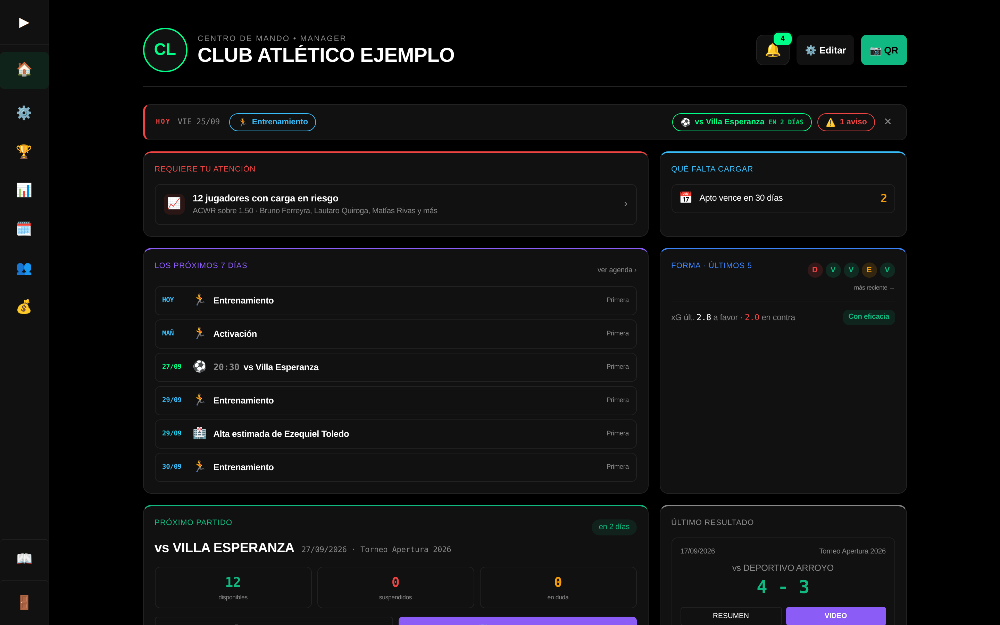
Tu primera semana
La app está organizada por lo que hace un club durante la semana, no por menús sueltos. Si arrancás de cero, este es el orden que funciona.
- Cargá el plantel. PLANTEL → MI PLANTEL
Nombre, apellido, dorsal, posición y categoría de cada jugador. La categoría es importante: es la que después separa Primera de Tercera en todas las pantallas. Si son muchos, cargalos de una sola vez con la planilla. - Cargá el torneo y el fixture. COMPETICIÓN → MIS TORNEOS
Podés pegar el fixture de la liga y la app lo interpreta sola. - Armá la citación del próximo partido. PLANIFICACIÓN → CITACIÓN
Sale el mensaje listo para pegar en el grupo de WhatsApp. - Pasá lista en los entrenamientos. PLANTEL → PRESENTISMO
Es lo que alimenta la sugerencia de convocatoria de la semana siguiente. - El día del partido, cargá los datos en vivo. OPERACIONES → NUEVO PARTIDO
- Mirá el análisis. ANÁLISIS → RESUMEN POR PARTIDO
Apenas termina el partido ya tenés el informe y la placa para redes. - Pasale a cada jugador su acceso. PLANTEL → MI PLANTEL
Con su PIN entra al Kiosco, carga su wellness y ve su agenda, su citación y sus números. Ver cómo pasarles el acceso.
El plantel primero. Casi todo lo demás depende de tener los jugadores cargados con su categoría: sin eso, la citación no tiene a quién sugerir y el análisis no sabe a quién atribuir cada acción.
Centro de mando
🏠 INICIO · es la primera pantalla al entrar
Un tablero armado con módulos. Arriba va lo que hay que resolver hoy y más abajo el balance, que cambia una vez por semana. Cada rol arranca con los suyos: el técnico con el equipo, tesorería con la plata.
Requiere tu atención
Suspendidos, jugadores a una amarilla del corte, lesiones con el alta vencida, wellness en rojo. Tocando cada aviso vas a la pantalla donde se resuelve.
Los próximos 7 días
Partidos, entrenamientos, cumpleaños, aptos y cuotas que vencen. Es un resumen de la Agenda.
Próximo partido y último resultado
Rival, fecha y hora del que viene; marcador y figuras del que pasó.
Wellness sin cargar y carga del plantel
Quién no respondió hoy y quién viene sobrecargado según su carga de las últimas semanas.
La plata del mes
Ingresos, egresos y saldo. Sólo para manager y administración.
Tablón
Las novedades vigentes publicadas para el cuerpo técnico.
Se puede acomodar. Con el ⚙️ elegís qué módulos ver y en qué orden. Arriba también está el selector de categoría: si lo cambiás, todos los módulos pasan a mostrar esa categoría.
Avisos y notificaciones
La 🔔 campanita de arriba · y las notificaciones en el celular
La campanita junta lo mismo que "Requiere tu atención", más préstamos que vencen, sesiones sin tareas cargadas y deudas vencidas. Cada aviso se puede descartar cuando ya lo resolviste.
Recibirlos en el celular
- Abrí la campanita y tocá Activar notificaciones.
- Aceptá el cartel del navegador.
- Listo. Tres veces por día (8, 13 y 18 hs) te llega un resumen de lo pendiente, y un aviso cuando falta poco para el partido.
En iPhone hay que instalar la app primero. Desde Safari: Compartir → Agregar a inicio, y activar las notificaciones entrando desde ese ícono. Si no llegan, la campanita tiene un diagnóstico que dice qué falta.
Quién ve qué
Cada persona del staff entra con su propio usuario y ve sólo lo que le corresponde. Los jugadores entran por el Kiosco.
| Rol | Para quién es | Qué puede hacer |
|---|---|---|
| Manager | El que dirige el club | Ve y edita todo, incluida la parte administrativa y la de dinero. |
| CT | Cuerpo técnico | Todo lo deportivo: partidos, análisis, planificación, plantel, presentismo y enfermería. No entra a Tesorería. |
| Admin | Tesorería y secretaría | Administración, cobros y sponsors. Ve el análisis pero no lo carga. |
| Jugador | El plantel | Entra por el Kiosco con su PIN, sin usuario. Ve lo suyo: su agenda, su citación, sus tarjetas, su wellness, su estado físico y los resúmenes del equipo. |
Si sos CT de una categoría sola, la app te muestra únicamente esa categoría en todas las pantallas. Es automático: lo define el manager al crear tu usuario.
Las categorías
Cómo decide la app qué divisiones mostrarte, en cualquier pantalla.
Las categorías no son una lista fija de la app: son las que tiene tu club, y salen de los jugadores que cargaste. Por eso conviene que estén escritas siempre igual.
| Tipo | Qué es | Dónde aparece |
|---|---|---|
| ACTIVA | Tiene al menos un jugador en el plantel. | En todas las pantallas, incluidas las de carga. |
| HISTÓRICA | Ya no tiene plantel, pero tiene partidos jugados o jugadores dados de baja. | Sólo en las de consulta: torneos, transferencias y resúmenes. |
Pasar lista, por ejemplo, sólo ofrece las activas: una división sin jugadores no tiene a quién. En cambio el resumen de temporada las muestra todas, porque se miran años anteriores.
Si sos CT con categorías asignadas, eso manda sobre todo lo demás. Ves las tuyas y nada más, aunque el club tenga diez divisiones. Y si tenés más de una, elegís cuál mirar con los chips de arriba.
Crear una división nueva es un acto deliberado. En la ficha del jugador la categoría se elige de una lista; si de verdad necesitás una que no existe, está la opción + Otra categoría…. Así se evita que convivan "Primera", "1ra" y "Reserva" como si fueran tres cosas distintas — que es lo que después descuadra los listados.
Nuevo partido
OPERACIONES → NUEVO PARTIDO
Es la pantalla que arma el partido antes de empezar a cargar datos. Elegís el torneo, el rival y la fecha —o tomás un partido que ya esté en el fixture— y armás la convocatoria.
Las dos reglas que valida
- Convocados: hasta 14, o 16 si la competición es un amistoso.
- Titulares: exactamente 5. Si no, no deja arrancar.
Si ya armaste la citación, los convocados vienen tildados solos y aparece un cartel azul avisándolo. Sólo tenés que confirmar o cambiar lo que haya cambiado a último momento. Los titulares se marcan acá, no en la citación.
Un jugador lesionado aparece marcado con 🏥. Es un aviso, no un bloqueo: si vos decís que está para jugar, seguís igual.
Toma de datos en vivo
OPERACIONES → NUEVO PARTIDO → INICIAR PARTIDO · o CONTINUAR PARTIDO
La pantalla de cancha. Cada jugada se carga en pocos toques y queda con su ubicación en el campo, que es lo que después arma los mapas de calor y el xG.
Cómo se carga una acción
- Tocás en la cancha el lugar donde pasó la jugada.
- Elegís el jugador (o el rival, si la acción fue de ellos).
- Elegís la acción: remate, recuperación, pérdida, duelo, falta, pase clave o tarjeta.
- Si fue un remate, elegís cómo terminó: gol, atajado, desviado o rebotado.
El quinteto en cancha se actualiza con los cambios, y eso es lo que permite calcular después el rendimiento de cada combinación de cinco.
Si se corta el partido —se cierra la app, se queda sin batería— entrás por CONTINUAR PARTIDO y seguís donde estabas. No se pierde nada.
Cargá también los goles del rival. Varios análisis necesitan reconstruir el partido gol a gol —quién abrió el marcador, qué gol fue para empatar— y sin los de ellos el marcador no se puede reconstruir. Cuando faltan, el reporte de goles lo avisa y deja ese partido afuera en vez de mostrar un número inventado.
Análisis offline
OPERACIONES → ANÁLISIS OFFLINE
Para analizar con calma sobre un partido que ya se cargó: cadenas de pases, pérdidas forzadas o no forzadas, y el seguimiento posicional. Sirve para profundizar sin la presión del banco.
Funciona sin conexión y sincroniza cuando vuelve internet, así que se puede usar en una cancha sin señal.
Mis torneos
COMPETICIÓN → MIS TORNEOS
Acá vive la competición: el fixture, la tabla de posiciones y el calendario de fechas.
Importar el fixture sin cargarlo a mano
- Copiá el fixture como lo publica la liga.
- Tocá IMPORTAR FECHAS y pegalo.
- La app separa las jornadas y los cruces, y trata de reconocer a cada rival. Los que no reconoce te los marca para que los corrijas.
Los partidos entre otros dos equipos también sirven. Quedan en el fixture para armar la tabla y, si les cargás video, alimentan el scouting de esos rivales.
Rivales
COMPETICIÓN → RIVALES
La ficha de cada rival: sistema táctico, jugadores clave, notas del cuerpo técnico y su dossier de video.
- Enfrentamientos: los partidos que jugaste contra él.
- Scouting: sus partidos contra terceros, los que están en el fixture.
Nunca se mezclan, así que el historial contra ese rival cuenta sólo los partidos tuyos.
El scouting es por categoría
El 3-1 que juega su Primera no es el de su Cuarta, así que cada división tiene su propia ficha: su sistema, sus jugadores clave, sus notas y su video. Arriba de la grilla elegís cuál estás mirando.
El chip TODAS es la vista de control. Cada rival muestra entonces "Scouting en 2 de 5 categorías" con las divisiones que ya tienen datos cargados: de un vistazo ves dónde te falta trabajo. Tocando cualquiera entrás directo a esa ficha.
En TODAS se mira, no se escribe. Mezclar el scouting de Primera con el de Cuarta pisaría datos, así que para cargar hay que elegir una categoría. Lo que sí suma esa vista es el historial cruzado: cómo te fue contra ese rival en todas las divisiones, con el desglose de cada una.
Resumen por partido
ANÁLISIS → RESUMEN POR PARTIDO
El informe completo de un partido: resultado, xG, remates, duelos, recuperaciones, disciplina y el rendimiento de cada jugador y cada quinteto. Tiene una vista express para la charla del vestuario y una avanzada para el análisis fino.
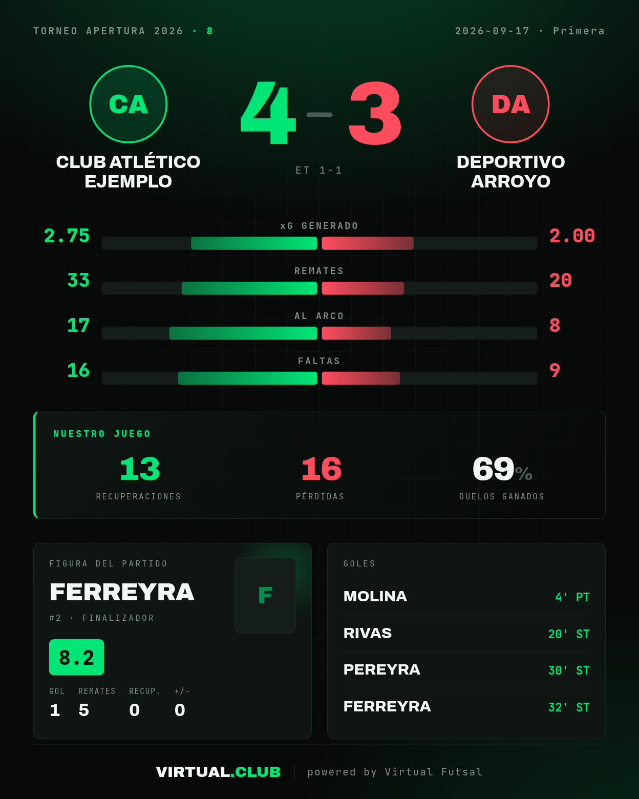
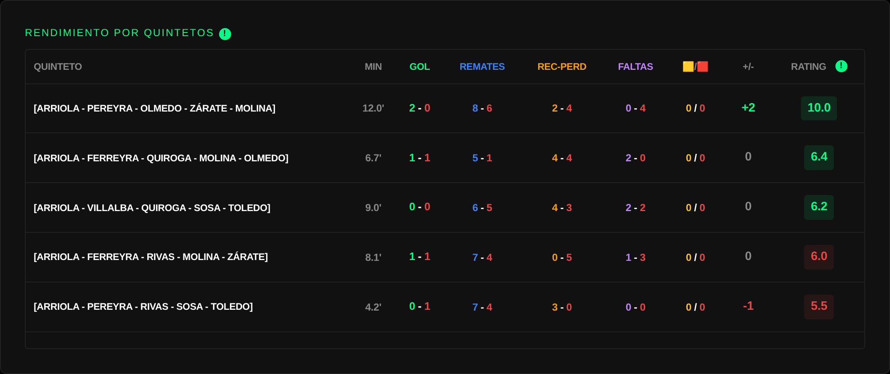
Resumen por jugador
ANÁLISIS → RESUMEN POR JUGADOR · el jugador lo ve como MI PERFIL
El perfil individual: su radar de rendimiento, sus mapas, su disciplina, su mejor quinteto y sus socios de gol. Se puede filtrar por torneo o por un partido puntual.
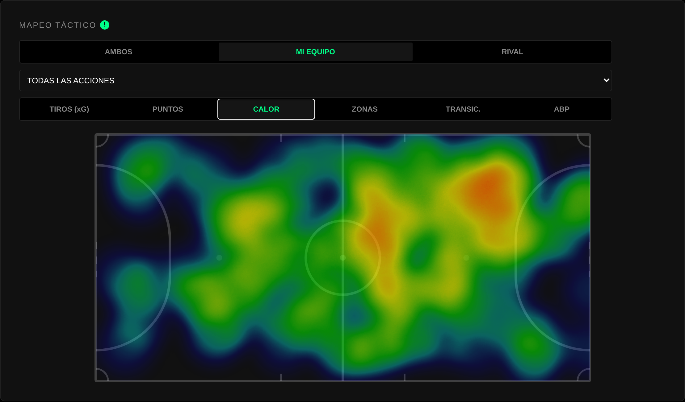
El listado de partidos, al final
- Los partidos que jugó se resaltan, con el resultado y su aporte.
- Los que fue citado y no entró quedan atenuados.
- Los que se perdió lesionado aparecen marcados como tales.
Tocando cualquiera se abre el resumen de ese partido.
Resumen de temporada
ANÁLISIS → RESUMEN TEMPORADA
La foto del año: evolución de resultados, xG a favor y en contra, y las tendencias del equipo a lo largo del campeonato.
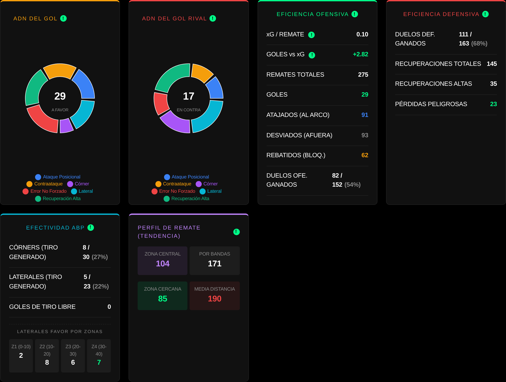
Resumen del plantel
ANÁLISIS → RESUMEN PLANTEL
Todos los jugadores de una categoría en una tabla: citaciones, partidos, titularidades y minutos; goles, xG, remates y asistencias; duelos, disciplina e impacto, y una sección aparte para los arqueros. Se ordena por cualquier columna y se filtra por torneo. Sirve para ver de un vistazo quién está sumando y quién no.
En el celular cada jugador es una tarjeta con sus tres números principales; VER TODO despliega el resto.
Comparar jugadores
ANÁLISIS → COMPARAR
Dos jugadores lado a lado, con los mismos números del Resumen del plantel. Contesta preguntas como "¿a quién pongo de cierre?" sin abrir dos pestañas.
Por defecto compara cada 40 minutos jugados, lo que dura un partido. Así el que jugó 600 minutos y el que jugó 200 se miden en la misma escala. Para ver los totales, destildá Mostrar cada 40 minutos jugados.
Origen de goles
ANÁLISIS → ORIGEN DE GOLES
De dónde salen los goles, a favor y en contra: ataque posicional, transición, balón parado o error no forzado. Es la pantalla que responde por dónde nos hacen daño.
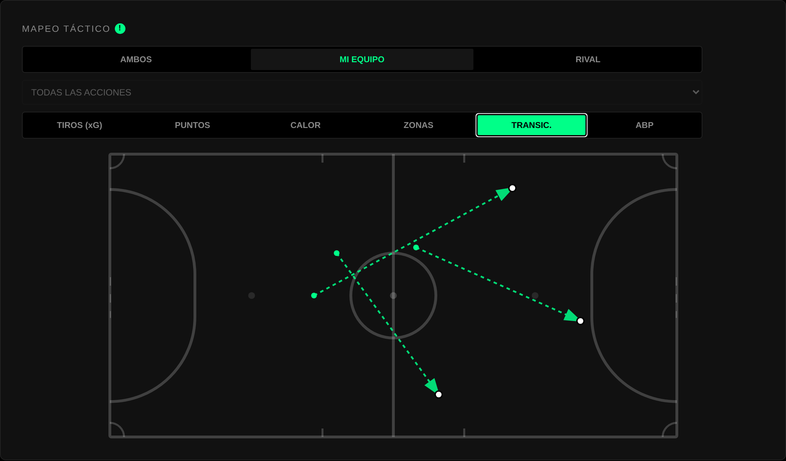
Cómo se dan los partidos
La otra mitad del reporte no mira de dónde salió el gol sino cómo estaba el marcador un segundo antes. Es la diferencia entre saber que metiste veinte goles y saber cuándo los metiste.
| Estado | Qué significa |
|---|---|
| Abrimos el marcador | Gol con el partido 0-0. Pusimos el primero. |
| Para empatar | Igualó el partido estando uno abajo. |
| Para dar vuelta | Nos puso arriba después de haber estado perdiendo. |
| Para desempatar | Rompió una igualdad sin haber estado nunca abajo. |
| Para estirar | Marcado cuando ya íbamos ganando. |
| De descuento | Marcado perdiendo por dos o más. Acorta, pero no empata. |
Arriba de todo está el número que más se usa: en cuántos partidos abrimos el marcador, y con qué resultado terminaron esos partidos. También cuántas veces remontaste y cuántas ventajas no supiste sostener.
Un partido sólo entra si su cronología está completa. Si los goles cargados no coinciden con el resultado final —típicamente porque faltan los del rival— el marcador no se puede reconstruir, y el reporte prefiere dejar ese partido afuera y avisártelo antes que mostrarte un número que no es.
Disciplina
ANÁLISIS → DISCIPLINA
Amarillas, rojas y sanciones de tribunal, por jugador y por categoría. Lleva la cuenta de la acumulación de amarillas y avisa quién está a una del corte.
Lo que se carga acá bloquea automáticamente al jugador suspendido en la sugerencia de la citación. No hay que acordarse.
Exportar gráficas
ANÁLISIS → EXPORTAR GRÁFICAS
Un editor para armar placas con los datos del club y bajarlas como imagen: para redes, para la charla o para el informe del partido. Se elige la plantilla, se acomodan los elementos y se exporta.
Agenda
PLANIFICACIÓN → AGENDA
Todo lo que tiene fecha en el club, en una sola lista. Antes había que mirar cinco pantallas para contestar "¿qué pasa esta semana?".
| Qué aparece | De dónde sale |
|---|---|
| Partidos | Mis torneos |
| Entrenamientos | Microciclo |
| Cumpleaños y aptos que vencen | Mi plantel |
| Cuotas que vencen | Tesorería |
| Altas médicas previstas | Enfermería |
Arriba elegís el rango (7 días, 30 días o 3 meses), avanzás o retrocedés, y filtrás por tipo o por categoría.
Citación
PLANIFICACIÓN → CITACIÓN
Arma la convocatoria del próximo partido y el mensaje para el grupo. Reemplaza escribirlo a mano cada semana.
- Elegí el partido. Trae rival, fecha, hora, sede y categoría del fixture. La hora de citación se propone 90 minutos antes.
- Completá los datos: dirección, entrada e indumentaria. La dirección de la cancha del rival queda guardada para la próxima vez.
- Tocá SUGERIR y después ajustá a mano lo que quieras.
- Copiá el mensaje o exportalo a WhatsApp, y guardá la convocatoria.
- Publicala en el Tablón para que la vean en el Kiosco. A cada citado que tenga las notificaciones activadas le llega un aviso "📣 Estás citado vs…" con la fecha y la hora de presentación.
El jugador lo ve en su menú. En la tarjeta Mi agenda del Kiosco aparece el próximo partido y, una vez publicada la citación, si está citado y a qué hora presentarse. Mientras no la publicás, no dice nada de la lista.
Cómo decide a quién sugerir
| Señal | Peso | De dónde sale |
|---|---|---|
| Presentismo | 45% | Sus últimas seis semanas de entrenamientos. |
| Rendimiento | 35% | Su rating promedio de los últimos ocho partidos. |
| Regularidad | 20% | Qué tan parejo rinde. |
Por eso el que rinde 6,5 siempre puntúa más alto que el del 9 y tres 4: en un partido de campeonato importa más saber con qué vas a contar que el techo de alguien.
Si abajo de un jugador dice "Sin partidos analizados", es que no hay acciones suyas cargadas en los últimos partidos de esa categoría. Su rendimiento queda neutro y el puntaje sale sólo del presentismo. Pasa cuando el partido se cargó como resultado desde el fixture pero nunca se usó la toma de datos, o cuando la categoría del partido está escrita distinto a la del jugador.
A quién no sugiere
Quedan marcados y fuera de la sugerencia, aunque los podés citar igual:
- SUSPENDIDO por roja o por acumulación de amarillas.
- LESIONADO según la Enfermería, evaluado a la fecha del partido: al que le dan el alta el sábado se lo puede citar para el domingo.
- APTO VENCIDO si se le venció el apto médico.
- EN DUDA si viene en rojo en el wellness — este sí se sugiere, pero avisado.
Bajar o subir jugadores de otra categoría
Arriba de la lista hay chips con las demás categorías del club. Los prendés y aparecen esos jugadores, marcados con su categoría en azul para que no se te cuelen sin verlos. La sugerencia automática sigue saliendo sólo de la categoría del partido: traer refuerzos es decisión tuya.
El límite cuenta a los refuerzos. Si bajás dos de Primera a jugar en Tercera, tenés que destildar dos de Tercera.
Microciclo
PLANIFICACIÓN → MICROCICLO
El planificador semanal. Cada día muestra los entrenamientos con su nivel de carga, los partidos oficiales y quiénes no están disponibles ese día por lesión.
- Las sesiones se arrastran de un día a otro para reprogramar.
- Se puede copiar una semana entera a la siguiente, con el tema de la semana incluido.
- Cada sesión lleva su objetivo, sus tareas y un bloque físico opcional.
Creador táctico
PLANIFICACIÓN → CREADOR TÁCTICO
La pizarra. Dibujás la jugada sobre la cancha —jugadores, movimientos, conos, zonas— y, si la armás en varios fotogramas, se reproduce como una animación. Eso es lo que después se ve en el Libro Táctico y en el Banco.
Armar una jugada animada
- Poné las fichas. Una por una desde el menú, o de una sola vez con una formación: 3-1, 4-0, 2-2, rombo o el power play 5v4. También podés poner el 3-1 del rival, que se planta replegado en su propio campo.
- Tocá ⏭ CONTINUAR. Se duplica el fotograma y el anterior queda de fondo, en transparencia: ese es el fantasma, y es lo que te deja ver de dónde venía cada jugador.
- Movés las fichas a su nueva posición. Aparece el camino que hicieron, punteado.
- Curvá el recorrido arrastrando el punto del medio del camino. La ficha va a seguir esa curva al reproducirse — un desmarque en curva se ve como un desmarque en curva, no como una línea recta.
- Repetí por cada movimiento de la jugada, y dale ▶ para verla.
Lo que conviene conocer
Duplicar
Con Ctrl+D o el botón en propiedades. La copia sale con el número siguiente libre, así no hay que editar etiqueta por etiqueta.
Espejar
Da vuelta la jugada entera, de punta a punta o de lado a lado. La misma pelota parada por el otro costado, sin rehacerla.
Barra de avance
Parar la jugada en cualquier instante y mirarla ahí. Mientras la mirás no se edita: lo que ves es un momento calculado, no el fotograma.
Duración por tramo
Cada movimiento tarda lo que vos le pongas, de 0,3 a 3 segundos. Un pase corto y una corrida de 30 metros no duran lo mismo.
El fantasma y los caminos son ayudas para dibujar. No salen en la imagen de la tarea ni en la animación que ven los jugadores: ahí queda sólo la jugada.
Banco de tareas
PLANIFICACIÓN → BANCO DE TAREAS · CREADOR FÍSICO
Todo lo que se dibuja en el creador táctico queda guardado acá, clasificado por fase de juego, para reutilizarlo en cualquier sesión del microciclo. Las jugadas animadas se ven en movimiento en la misma tarjeta.
El creador físico arma el bloque de carga —series, tiempos, repeticiones— y también va a parar al banco.
Libro táctico
PLANIFICACIÓN → LIBRO TÁCTICO
El libro del equipo: balón parado, rotaciones, salidas y presiones, dibujadas y guardadas en un solo lugar para que no vivan en la cabeza del entrenador ni en un cuaderno. Las pestañas de arriba separan las situaciones.
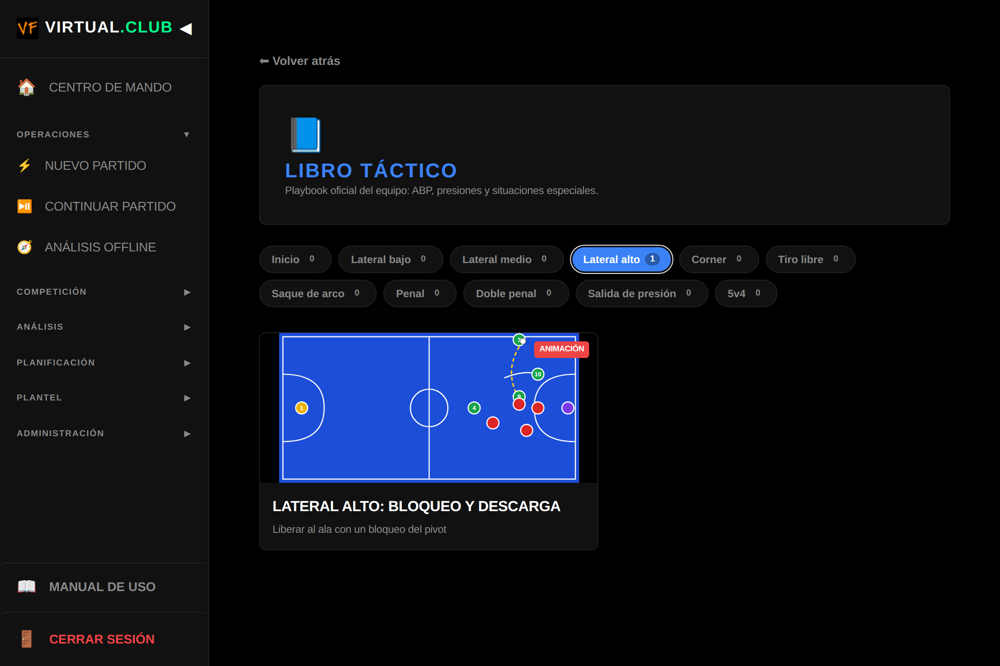
Es la pantalla para mostrarle al plantel. Al abrir una jugada de varios fotogramas se reproduce sola, en loop, con los mismos recorridos y tiempos que le pusiste en el creador.
Videoanálisis
PLANIFICACIÓN → VIDEOANÁLISIS
Vinculás el video del partido —de YouTube— y los cortes salen solos de los eventos que ya cargaste: cada gol, remate, falta, pérdida y recuperación se convierte en un clip. No hay que volver a mirar el partido entero.
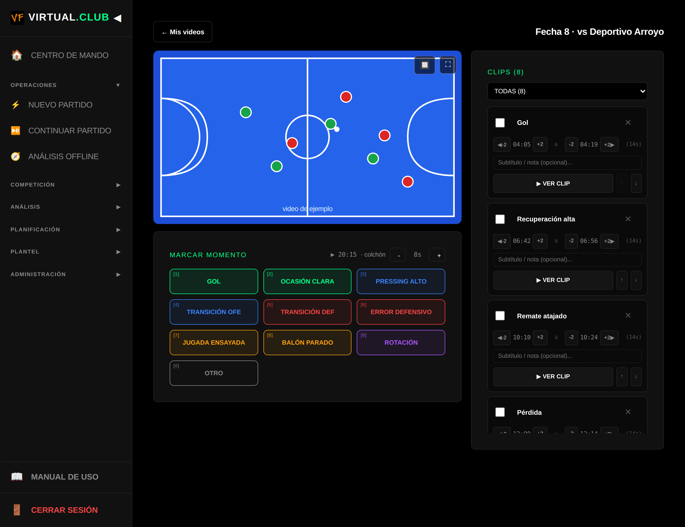
- Pegá el link del video del partido.
- Sincronizá: marcá en qué segundo del video arranca el primer tiempo y en cuál el segundo.
- Listo: cada evento ya tiene su clip. La sincronización queda guardada.
Los goles arrancan antes que el resto de los cortes, para que se vea la construcción y no sólo la definición.
Novedades
PLANIFICACIÓN → NOVEDADES
El centro de comunicaciones del club: avisos cortos para el cuerpo técnico, para los jugadores o para los dos.
- Elegí para quién es: todos, sólo jugadores o sólo cuerpo técnico.
- Elegí las categorías que lo van a ver.
- Elegí cuándo vence: 1, 3, 7, 15 o 30 días, o sin vencimiento.
- Escribí el mensaje y tocá PUBLICAR.
Los jugadores lo ven en Novedades del club, en su menú del Kiosco. El cuerpo técnico, en el Tablón del Centro de mando.
Al vencer, desaparece solo de todos lados: del Kiosco, del Tablón y de la lista de envíos. Para sacarlo antes, tocá la ✕ del aviso.
Mi plantel
PLANTEL → MI PLANTEL
La ficha de cada jugador: datos personales, apodo, dorsal, posición, categoría, foto, contacto, apto médico y talles.
Buscar a alguien NUEVO
El buscador de arriba encuentra por nombre, apellido o apodo, sin importar acentos ni mayúsculas ("gomez" encuentra a Gómez, "beni" al que le dicen Beni). Si escribís sólo un número, busca por dorsal. Se combina con los chips de categoría.
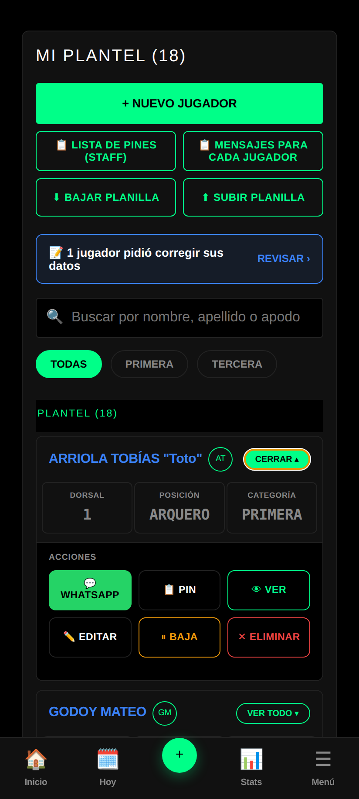
Los botones de arriba
| Botón | Qué hace |
|---|---|
| + NUEVO JUGADOR | Abre la ficha vacía. El PIN del Kiosco se genera solo al guardar. |
| 📋 LISTA DE PINES (STAFF) | Copia una sola lista con el PIN de cada jugador, para el cuerpo técnico. No la reenvíes a los jugadores: cada uno vería el PIN de todos. |
| 📋 MENSAJES PARA CADA JUGADOR | Copia un mensaje de acceso por jugador, uno abajo del otro, para ir mandándole a cada uno el suyo. |
| ⬇ BAJAR PLANILLA | Baja un Excel con todo el plantel. Ver carga por planilla. |
| ⬆ SUBIR PLANILLA | Sube ese Excel completo y muestra qué cambia antes de guardar. |
Los dos "copiar" toman los jugadores que estás viendo: si filtraste una categoría o buscaste a alguien, copian sólo esos. La planilla la ven sólo manager, administración y superuser.
Los botones de cada jugador
| Botón | Qué hace |
|---|---|
| Abre WhatsApp con su mensaje de acceso ya escrito. Si tiene celular cargado, va directo a su chat. | |
| 📋 PIN | Copia ese mismo mensaje para pegarlo donde quieras. |
| 👁 VER | Abre la ficha completa, sin poder modificar nada. |
| ✏️ EDITAR | Abre el formulario para cambiar sus datos. |
| ⏸ BAJA | Lo saca de las listas del día a día y conserva su historial. Se reincorpora desde VER BAJAS. |
| ✕ ELIMINAR | Lo borra con todo su historial. No se puede deshacer. |
La categoría
Se elige de la lista del club. Si de verdad hace falta una nueva, está + Otra categoría…, pero conviene pensarlo dos veces.
El apto médico
Cargá el vencimiento: la citación avisa sola cuando se venció y el jugador lo ve en Mi estado físico.
El celular
Con código de área alcanza (11 5555-5555). La app le agrega el 54 9 al abrir WhatsApp.
El apodo
Opcional. Aparece entre comillas al lado del nombre y sirve para buscarlo.
Carga por planilla NUEVO
PLANTEL → MI PLANTEL → ⬇ BAJAR PLANILLA · ⬆ SUBIR PLANILLA
Para dar de alta un club entero de una vez, o para completar un dato que no se cargó al principio (la obra social de todos, por ejemplo) sin entrar jugador por jugador.
- Bajá la planilla. Es un Excel con todos los jugadores y todos sus datos. Para un club nuevo sale vacía. Trae una segunda hoja, INSTRUCCIONES, con los valores que se aceptan.
- Completala en Excel o en Google Sheets. Para sumar un jugador, agregá una fila con la columna ID vacía: necesita apellido, nombre y categoría.
- Subila. Acepta el Excel (.xlsx) o un CSV.
- Revisá lo que va a pasar y tocá GUARDAR. Hasta ese momento no se guardó nada.
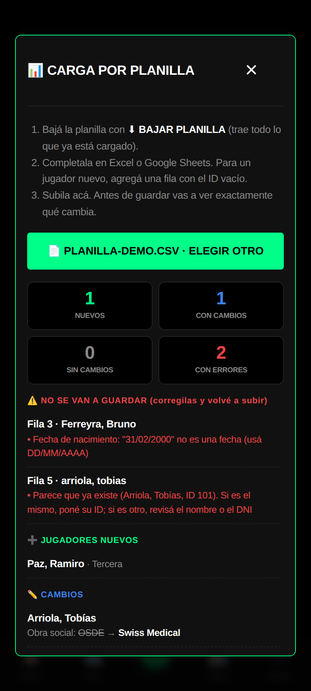
Una celda vacía no borra nada. Significa "dejalo como está". La planilla tampoco elimina jugadores ni cambia PINes o fotos: para eso está la app.
No toques la columna ID. Es la que dice a qué jugador corresponde cada fila. Si alguien la borra, la app detecta que ese "jugador nuevo" se llama igual o tiene el mismo DNI que uno existente y lo frena, para no duplicarlo.
Las fechas van como DD/MM/AAAA. Las columnas que la app no conoce (una de comentarios, por ejemplo) se ignoran y se avisan.
Cambios pedidos por jugadores NUEVO
PLANTEL → MI PLANTEL → 📝 N jugadores pidieron corregir sus datos
Desde Mis datos en el Kiosco, el jugador o su familia pueden corregir el celular, el contacto de emergencia, la obra social y el grupo sanguíneo. Nada se guarda en la ficha hasta que alguien del club lo aprueba.
- Cuando hay pedidos, arriba de la lista aparece el aviso azul. Tocá REVISAR.
- Cada pedido muestra el dato de antes tachado y el nuevo al lado. Destildá lo que no quieras aceptar.
- Tocá APROBAR o RECHAZAR. Podés dejarle una nota: el jugador la ve en su pantalla.
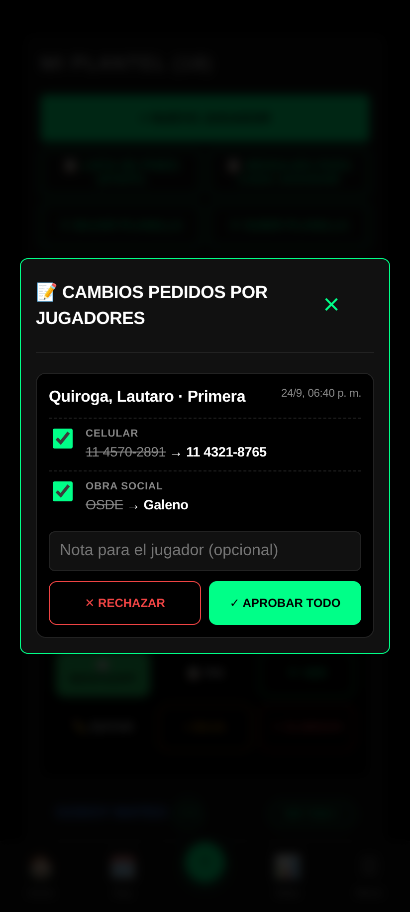
Aprueban manager, administración y superuser. El cuerpo técnico no ve este aviso.
Tutores y autorizaciones
PLANTEL → MI PLANTEL → 👁 VER (en la ficha del jugador)
Quién está a cargo de cada chico y qué tiene permitido el club: traslados, uso de imagen y atención médica. Antes esto vivía en el WhatsApp del entrenador de turno y se perdía cuando el entrenador cambiaba.
| Estado | Qué significa |
|---|---|
| SIN RESPONDER | Todavía no se le preguntó a la familia. Es trabajo pendiente del club. |
| NO AUTORIZA | La familia dijo que no. Es una decisión tomada. |
| AUTORIZA | Permitido. |
Se anota quién firmó y cuándo. El teléfono de cada tutor tiene su botón de WhatsApp.
Presentismo
PLANTEL → PRESENTISMO
Pasar lista de cada entrenamiento. Elegís la categoría y la fecha, marcás a cada uno y guardás la planilla.
| Estado | Cuándo se usa | ¿Cuenta en el porcentaje? |
|---|---|---|
| PRESENTE | Entrenó normal. | Sí, suma. |
| TARDE | Llegó tarde pero entrenó. | Sí, suma. |
| AUSENTE | Faltó sin avisar. | Sí, resta. |
| JUSTIF. | Faltó con aviso. | Sí, resta. |
| LESIONADO | De baja según la Enfermería. | No. Sale del cálculo. |
El lesionado no paga su lesión. Los días de baja no cuentan ni como presente ni como falta: salen de la cuenta. Si la Enfermería lo tiene de baja ese día, ya viene marcado al pasar lista.
Acá sólo aparecen las categorías con plantel. Es a propósito: a una división sin jugadores no hay a quién pasarle lista.
Enfermería
PLANTEL → ENFERMERÍA · el jugador la ve como MI ESTADO FÍSICO
El registro de lesiones del plantel, y la fuente de verdad de quién está disponible.
- Tocá + NUEVA LESIÓN y elegí el jugador.
- Cargá zona, tipo, lado y gravedad. Al elegir la gravedad se propone una fecha de alta que podés corregir.
- Si se lesionó jugando, elegí en qué partido: con el tiempo eso muestra en qué partidos te lesionás.
- Escribí el tratamiento — eso es lo que ve el jugador en su pantalla — y las notas internas, que no ve.
Los tres estados
- DE BAJA no entrena ni juega.
- READAPTACIÓN entrena aparte. Se avisa, pero no se bloquea.
- ALTA disponible.
El alta no se da sola. Cuando pasa la fecha estimada sin que nadie la confirme, la ficha queda marcada como ALTA VENCIDA y el jugador sigue sin estar disponible. Ningún sistema debería declarar sano a alguien por calendario.
Cargar una lesión acá se refleja sola en la citación, en Nuevo Partido, en el microciclo y en el presentismo. No hay que avisar en cada pantalla.
Wellness
PLANTEL → WELLNESS
El cuestionario diario del jugador: sueño, estrés, fatiga, dolor muscular, ánimo, motivación, ansiedad y confianza. Después del entrenamiento carga su RPE y los minutos, y de ahí sale la carga acumulada.
El que viene en rojo —mucha fatiga, mucho dolor, poco sueño— aparece avisado en el Centro de Mando y en la citación.
Tres formas de cargarlo
- Desde el Kiosco: si no lo cargó, es lo primero que ve al entrar, con un botón para hacerlo en un minuto.
- Por WhatsApp: escribiéndole "Wellness" al número del club, el bot le hace las preguntas una por una.
- El cuerpo técnico lo puede cargar a mano desde INGRESAR DATOS MANUAL.
El recordatorio sale solo. Al que tiene las notificaciones activadas y todavía no lo cargó le llega un aviso a las 8, a las 13 y a las 18 hs. Si el club configuró el WhatsApp automático, también uno por WhatsApp desde el mediodía.
Fisiología
PLANTEL → FISIOLOGÍA
Las evaluaciones físicas: saltos, velocidad, resistencia y composición corporal, con la comparación contra valores de referencia y la evolución de cada jugador.
Incluye la biblioteca de prevención y rehabilitación — la misma de la que la Enfermería saca los ejercicios que le muestra a cada lesionado según su zona.
El déficit bilateral de salto por encima del 10% se marca como factor de riesgo de lesión. Es de los pocos números que anticipan un problema antes de que pase.
Transferencias
PLANTEL → TRANSFERENCIAS
Altas, bajas y préstamos del plantel, con su historial. Sirve para saber quién entró y quién salió en cada mercado.
Tesorería
ADMINISTRACIÓN → TESORERÍA
Las cuotas del plantel, las deudas, los ingresos extra y los egresos del club. Cada jugador ve lo que debe desde su acceso y puede mandar el comprobante por WhatsApp.
Se configuran el alias, el CBU y el WhatsApp de tesorería del club. El jugador ve su deuda en el Kiosco con dos botones: Pagar con MP (copia el alias y abre Mercado Pago) y Comprobante (abre el WhatsApp de tesorería).
Desde la tabla de deudas, el botón de WhatsApp le manda al jugador un recordatorio con el saldo pendiente.
Staff, empleados y sponsors
ADMINISTRACIÓN → MI STAFF · EMPLEADOS · SPONSORS
Mi staff son los usuarios del cuerpo técnico y qué categorías tiene asignada cada uno. Empleados lleva los sueldos y pagos del personal. Sponsors, los contratos de los auspiciantes y sus vencimientos.
Configuración del club
ADMINISTRACIÓN → CONFIG. DE CLUB
El nombre y el escudo del club, que salen en las placas, en los informes y en el Kiosco. También está el código del club: es el que usa el Kiosco para saber de qué club son los jugadores.
Escribí el nombre igual que en el fixture. La app usa ese nombre para distinguir tus partidos de los cruces entre otros equipos. Si en la liga figura "Unión Norte", poné "Unión Norte" y no "Unión".
Mi suscripción
ADMINISTRACIÓN → MI SUSCRIPCIÓN
El plan del club, cuándo vence y cuántas categorías usa sobre su tope.
| Plan | Categorías | Para quién |
|---|---|---|
| DT | 1 | El técnico de un solo equipo o una escuelita. |
| CT | 3 | El club con primera y las formativas de abajo. |
| Club | sin tope | Toda la institución, masculino y femenino. |
Lo único que cambia entre planes es cuántas categorías se manejan: ningún plan esconde funciones. El análisis, el video y los reportes están en los tres.
La prueba es de 30 días con todo desbloqueado y sin tarjeta. Al terminar, los datos quedan guardados.
El acceso del jugador
El Kiosco: los jugadores entran con un PIN, sin usuario ni contraseña.
- El jugador abre el link del Kiosco del club, en su celular o en la tablet del club.
- Toca su foto o su nombre en la grilla del plantel. Arriba puede filtrar por categoría.
- Pone su PIN de 4 dígitos.
Lo que no ve: las notas internas del cuerpo técnico, los datos personales de sus compañeros ni nada de administración. Las lesiones, las tarjetas y los datos de cada uno los recorta el servidor: aunque la tablet sea compartida, cada jugador ve sólo lo suyo.
Mis datos NUEVO
KIOSCO → MIS DATOS (el botón ancho debajo de los accesos)
El jugador o su familia corrigen el celular, el contacto de emergencia, la obra social y el grupo sanguíneo. El cambio queda esperando aprobación hasta que el club lo revisa en Mi plantel.
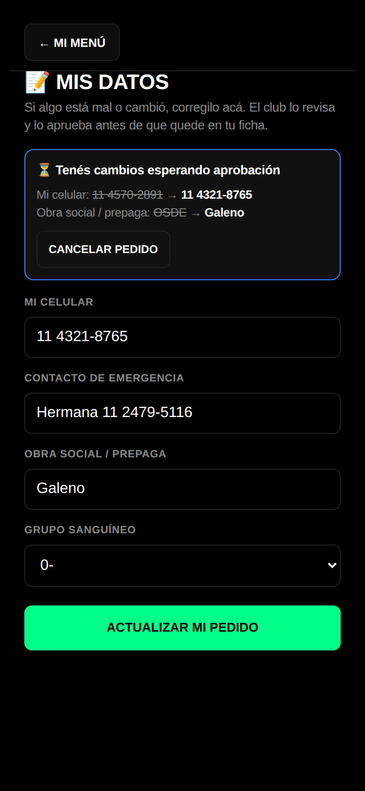
Mientras espera, puede actualizar el pedido o cancelarlo. Cuando el club lo resuelve, ve si se aprobó y la nota que le dejaron.
Avisos al celular del jugador NUEVO
KIOSCO → tarjeta AVISOS EN TU CELULAR → ACTIVAR NOTIFICACIONES
Se activa una vez, desde el celular del jugador. A partir de ahí le llegan:
| Aviso | Cuándo |
|---|---|
| 📣 Estás citado | Cuando el cuerpo técnico publica la citación en la que figura. |
| ⚖️ Te falta el wellness | A las 8, 13 y 18 hs, sólo si todavía no lo cargó. |
| 🎂 ¡Feliz cumple! | El día de su cumpleaños. |
En iPhone, primero hay que instalar el Kiosco: desde Safari, Compartir → Agregar a inicio, y entrar desde ese ícono. Si lo activa en la tablet compartida del club, los avisos le llegan a la tablet: conviene activarlo en el celular propio.
Pasarles el acceso
PLANTEL → MI PLANTEL
- A uno solo: 💬 WHATSAPP en su tarjeta abre su chat con el link, el código del club y su PIN.
- A todo el plantel: 📋 MENSAJES PARA CADA JUGADOR copia un mensaje por jugador para ir mandándolos.
- Para el staff: 📋 LISTA DE PINES (STAFF) copia todos los PINes juntos. Esa no se reenvía a los jugadores.
Dudas frecuentes
Cargué un jugador y no aparece en la citación
Fijate que tenga la misma categoría que el partido. Si es de otra, prendé el chip de su categoría en la pantalla de citación para que aparezca.
Falta una categoría en el selector de una pantalla
Las pantallas de carga muestran sólo las divisiones con jugadores en el plantel. Si una no aparece, o no tiene a nadie cargado, o sos CT y no la tenés asignada. Las pantallas de consulta sí muestran las históricas.
En la citación todos dicen "Sin partidos analizados"
No hay acciones cargadas en los últimos partidos de esa categoría. Suele pasar cuando los partidos se cargaron como resultado desde el fixture sin usar la toma de datos, o cuando la categoría del partido está escrita distinto a la de los jugadores. Mientras tanto el puntaje sale sólo del presentismo.
El porcentaje de presentismo de un jugador cambió solo
Si estuvo lesionado, esos días salieron del cálculo. Es correcto: no son faltas suyas.
No me deja cargar una categoría nueva
Llegaste al tope de tu plan. Lo ves en MI SUSCRIPCIÓN, con cuántas categorías estás usando.
Se cortó la carga del partido
Entrá por CONTINUAR PARTIDO: lo cargado hasta ahí está guardado.
Dibujé una jugada con varios fotogramas y no se mueve
La animación necesita al menos dos fotogramas y que algo cambie de lugar entre uno y otro. Si las fichas están en la misma posición, no hay movimiento que reproducir.
Un jugador no puede entrar con su PIN
El PIN se gestiona desde su ficha en MI PLANTEL, y desde ahí se le puede reenviar por WhatsApp.
Un jugador tiene que volver a poner el PIN
Pasa una sola vez después de una actualización, o si cerró su sesión. Con el PIN nuevo vuelve a ver su agenda, sus tarjetas y el torneo.
Al jugador no le llegan los avisos
Tiene que activarlos desde su celular, en la tarjeta Avisos en tu celular. En iPhone, además, el Kiosco tiene que estar agregado a la pantalla de inicio. Si bloqueó las notificaciones, se desbloquean desde el candado de la barra de direcciones.
El botón de WhatsApp dice que el número no existe
Revisá el celular en la ficha: tiene que tener el código de área (11 5555-5555, 351 555-5555). La app le agrega el 54 9. Si es de otro país, cargalo con su código (+598…).
La planilla marca filas con error
Esas filas no se guardan: el resto sí. La vista previa dice qué falla en cada una (una fecha que no existe, un DNI repetido, una posición mal escrita). Corregilas en el Excel y volvé a subirlo: lo que ya se guardó aparece como "sin cambios".
Una novedad sigue apareciendo después de vencer
Desde el 24/09 las vencidas desaparecen solas de todos lados. Si ves una, recargá la página.
El video no muestra los clips en el momento justo
Falta sincronizarlo: hay que marcar en qué segundo del video arranca cada tiempo. Se hace una vez y queda guardado.